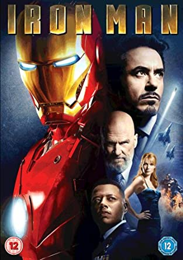
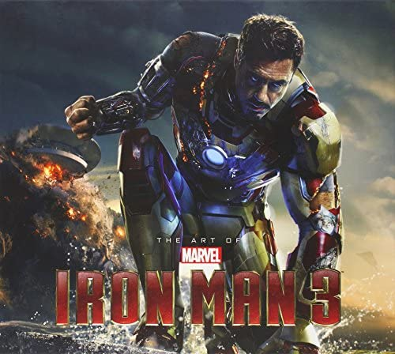

Iron Man (2008)
Iron Man is a 2008 American superhero film based on the Marvel Comics character of the same name. Produced by Marvel Studios and distributed by Paramount Pictures, it is the first film in the Marvel Cinematic Universe (MCU). Iron Man premiered in Sydney on April 14, 2008, and was released in the United States on May 2, as the first film in Phase One of the MCU. It grossed over $585 million, becoming the eighth-highest grossing film of 2008.
Iron Man 2 (2010)
Iron Man 2 is a 2010 American superhero film based on the Marvel Comics character Iron Man. Produced by Marvel Studios and distributed by Paramount Pictures, it is the sequel to Iron Man (2008) and the third film in the Marvel Cinematic Universe (MCU). Iron Man 2 premiered at the El Capitan Theatre on April 26, 2010, and was released in the United States on May 7, as part of Phase One of the MCU. The film received generally positive reviews from critics with praise for its action sequences and performances, although they deemed it to be inferior to the first film. The sequel grossed over $623.9 million at the worldwide box office, making it the seventh-highest-grossing film of 2010.

Iron Man 3 (2013)
Iron Man 3 (titled onscreen as Iron Man Three) is a 2013 American superhero film based on the Marvel Comics character Iron Man, produced by Marvel Studios and distributed by Walt Disney Studios Motion Pictures. Iron Man 3premiered at the Grand Rex in Paris on April 14, 2013, and released in the United States on May 3, as the first film in Phase Two of the MCU. It received positive reviews from critics, with praise for its action sequences, Black's direction, and Downey's performance, though there was criticism for its portrayal of the Mandarin. The film was a box office success, grossing over $1.2 billion worldwide, making it the second-highest-grossing film of 2013 and the sixteenth film to gross over $1 billion.
